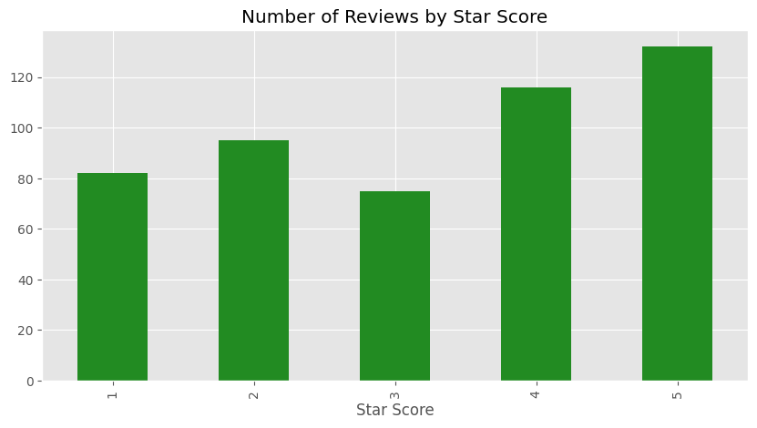
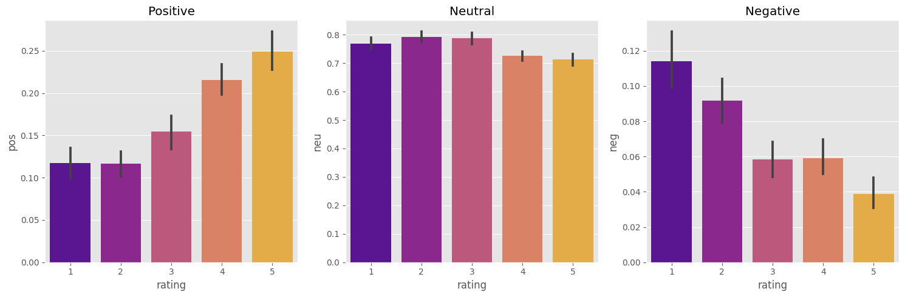
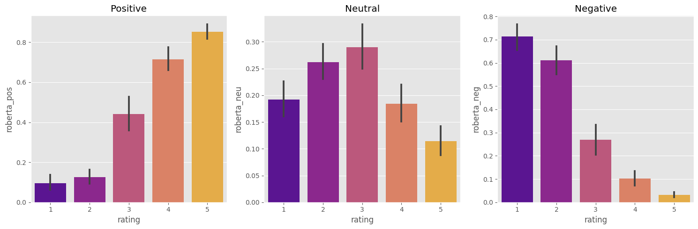
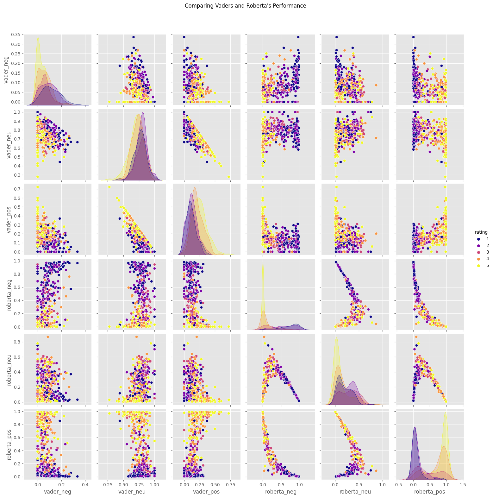
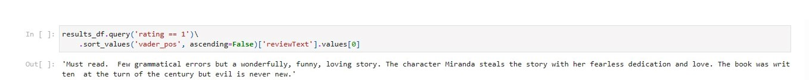
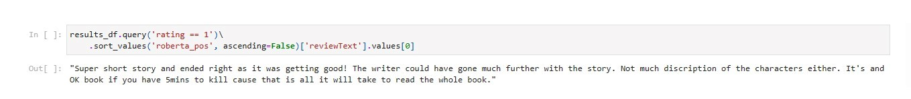
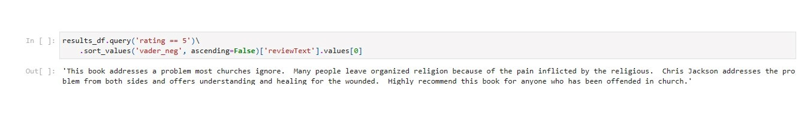

Comparação de performance dos Modelos VADER e RoBERTa
Metodologias
Selecionadas apenas as primeiras 500 entradas, por questões de simplicidade
Utilização de Python
Base de Dados Usada
"Amazon Kindle Book Review for Sentiment Analysis" Dataset link
Porquê análise de sentimento?
Análise sentimental é uma forma de processamento de linguagem natural,
que procura identificar, extrair e quantificar motivações emocinais de um corpo de texto.
Pode ser aplicada em contextos como marketing e análise de produtos. [1]
Neste projecto, procuro comparar a performance dos modelos "VADER" e "RoBERTa" no caso de reviews de livros publicadas na plataforma Kindle.
Classificações dadas pelos utilizadores
No caso de reviews de livros, é habitual os utilizadores atribuírem uma qualificação de 1 a 5 estrelas.
Na nossa base de dados, encontramos o mesmo sistema, onde os utilizadores atribuíram uma qualificação quantitativa (estrela), juntamente
com uma qualificação qualitativa (review).
Neste cenário já temos atribuídas às reviews dos utilizadores uma qualificação quantitativa.
Grande parte das reviews tiveram uma qualificação igual ou superior a 3 estrelas. Assim, podemos afirmar que maioria das reviews estão associadas um sentimento positivas.

Scoring dos modelos VADER e RoBERTa
Com os modelos "VADER" e "RoBERTa", a quantificação sentimental é feita a partir de "polarity scores". Sendo que os modelos vão atribuir uma
qualificação às categorias emocionais de "negativo", "neutro" e "positivo".
A figura, apresentada abaixo, representa as qualificações feitas pelo modelo "VADER" consoante as estrelas dadas pelos utilizadores:

Com o modelo "RoBERTa", foram elaboradas as seguintes qualificações por estrelas:

Verifica-se que o modelo “VADER” tendencialmente converge as pontuações das reviews, em cada categoria sentimental. E em média, não atribui pontuações altas nas categorias “positiva” e “negativa”.
Já o modelo “RoBERTa”, diverge as pontuações dadas por estrela. Conseguindo melhor identificar padrões emocionais de discurso do que o modelo “VADER”.
Comparação de Performance: VADER vs. RoBERTa
Ao observar a figura de baixo, podemos verificar que o modelo "RoBERTa" é mais confiante a dar qualificações que o modelo "VADER".
Bem como, o modelo "RoBERTa" consegue dar qualificações que melhor correspondem às qualificações que os utilizadores deram.

Exemplos de reviews onde os modelos ficaram confusos
Exemplo onde o modelo "VADER" associou sentimento positivo a uma qualificação de 1 estrela:

Exemplo onde o modelo "RoBERTa" associou sentimento positivo a uma qualificação de 1 estrela:

Exemplo onde o modelo "VADER" associou sentimento negativo a uma qualificação de 5 estrelas:

Exemplo onde o modelo "RoBERTa" associou sentimento negativo a uma qualificação de 5 estrelas:
.png)